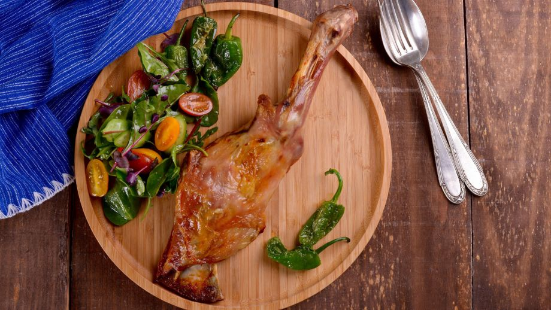
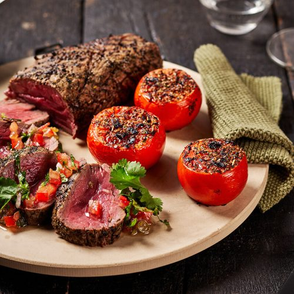
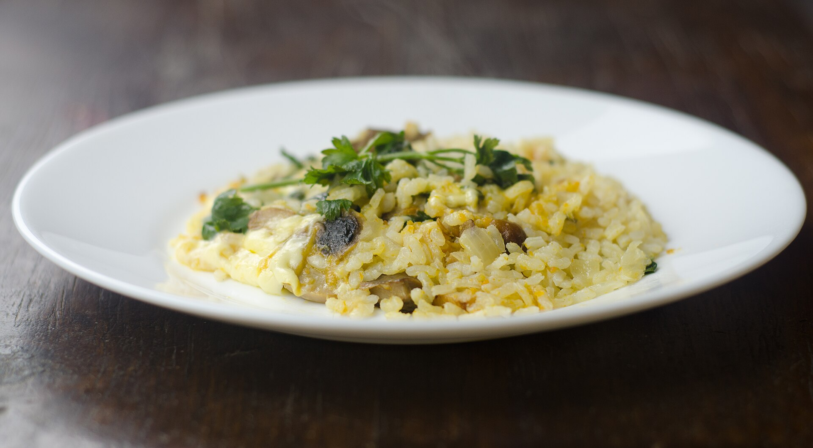

Lechazo de cordero.
Trátese este de un plato selecto de la gastronomía abulense degustado desde la baja Edad Media.
 30 minutos
30 minutos
Gastronomía de interior.

Sopa castellana.
Plato para los días del invierno más letal en el interior de la estepa peninsular española.
42 minutos
Gastronomía de interior.

Chateaubriand.
Un plato muy oh-la-la! para quienes añoran las épocas prósperas de Francia, remontándose a períodos previos a los revolucionarios.
45 minutos

Gastronomía aristocrática.

Risotto affumicato.
Un plato que condensa la tradición selecta alpina en su austeridad con la sugerencia del Mezzogiorno uniendo la península de punta a punta.
19 minutos